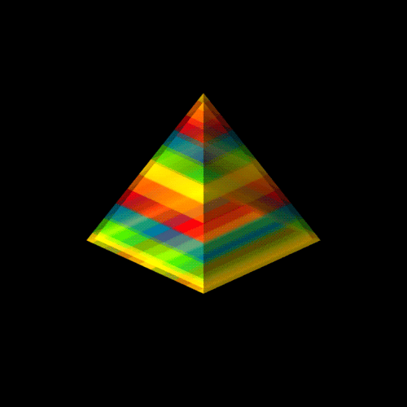
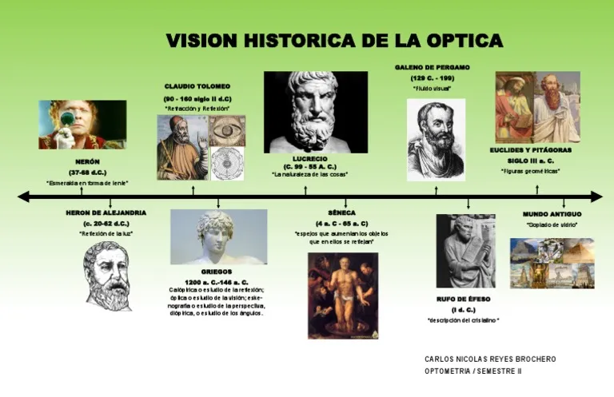
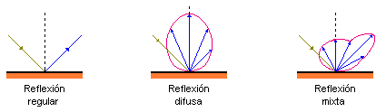
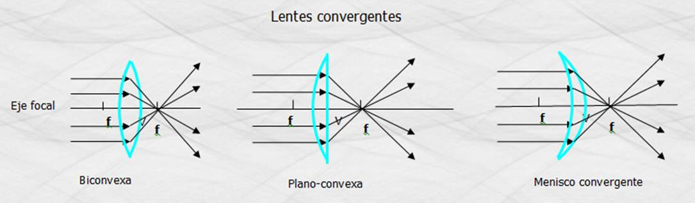

La óptica es la rama de la física que estudia la luz y su comportamiento cuando interactúa con diferentes medios. Este campo abarca desde la propagación de la luz, hasta su reflexión, refracción, difracción e interferencia. La óptica es fundamental para una amplia variedad de aplicaciones, como la astronomía, la fotografía, la medicina, las pantallas electrónicas y las comunicaciones ópticas.
Los primeros estudios sobre óptica se remontan a la antigua Grecia. El filósofo Euclides (aproximadamente 300 a.C.) es conocido por haber formulado la ley de reflexión. Sin embargo, el verdadero avance en la comprensión de la óptica se produjo en el siglo XVII con los trabajos de Isaac Newton y Christiaan Huygens. Newton fue quien propuso la teoría corpuscular de la luz, mientras que Huygens defendió la teoría ondulatoria. Ambos modelos coexistieron hasta que Albert Einstein en el siglo XX desarrolló la teoría cuántica de la luz, que combina aspectos tanto de partículas como de ondas.
La óptica tiene aplicaciones en muchas áreas de la ciencia y la tecnología. Algunas de las más importantes incluyen:
Un rayo de luz es una línea que muestra la dirección de propagación de la luz. Aunque la luz viaja como una onda, se representa frecuentemente como un rayo para simplificar los cálculos en óptica geométrica. Los rayos de luz pueden ser reflejados, refractados o difractados dependiendo del medio con el que interactúan.
🌈 La animación muestra cómo un **prisma descompone la luz blanca en sus colores componentes** por refracción. 🌈
🔄 Esta animación muestra cómo un **rayo de luz se refleja en un espejo plano**. 🔄
🔍 Esta animación muestra cómo una **lente convergente** enfoca los rayos de luz paralelos hacia un punto focal. 🔍
Las lentes convergentes, también conocidas como lentes convexas, son dispositivos ópticos capaces de enfocar los rayos de luz que inciden sobre ellas en un único punto, llamado punto focal. Estas lentes tienen una forma abombada hacia afuera y se utilizan comúnmente en instrumentos ópticos como lupas, microscopios y telescopios.
En esta animación se observa cómo varios rayos de luz paralelos llegan desde la izquierda, atraviesan la lente y convergen en un punto específico a la derecha. Este fenómeno se produce gracias a la refracción: la luz cambia de dirección al pasar del aire al material de la lente (vidrio o plástico), y luego nuevamente al salir de ella. La curvatura de la lente está diseñada para que todos los rayos refractados coincidan en el foco.
Este principio tiene múltiples aplicaciones en óptica. Por ejemplo, en la corrección visual, se usan lentes convergentes en anteojos para personas con hipermetropía, ayudando a enfocar correctamente la imagen en la retina. Además, en las cámaras fotográficas modernas, se utilizan lentes convexas para concentrar la luz en el sensor de imagen y formar fotografías nítidas.
Comprender el comportamiento de las lentes permite desarrollar mejores tecnologías ópticas y aprovechar la luz de manera precisa para obtener imágenes, dirigir rayos láser, o incluso aumentar la eficiencia de dispositivos que dependen de la concentración de luz, como los paneles solares con lentes Fresnel.